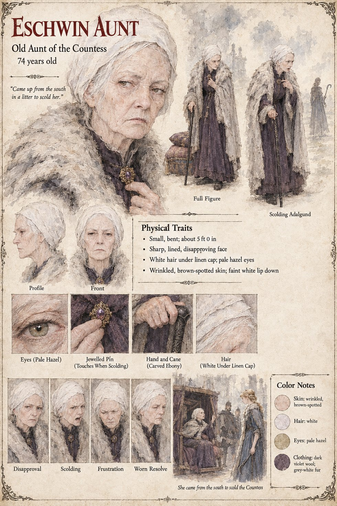

Eschwin Aunt
Old aunt of the Countess · came up from the south · 74 years old by her sheet
The old aunt of the Countess Adalgund, who comes up from the south in a litter to scold her. Theudebald's page gives Adalgund the title Countess of Eschwin, and the Gazetteer puts Eschwin on the south bank; the sheet does not say whether the aunt is on the King's side or her mother's. The publication notes say what the scolding is about: in Chapter 13, before the Ordeal, she tries and fails to persuade Adalgund to take off her pruning-hook. Her sheet draws her small, bent and sharp-faced, in dark violet wool and a grey-white fur wrap, white hair under a linen cap, a carved ebony cane in one hand and the other at a jewelled pin that she touches when she scolds; its scenes, Scolding Adalgund and She came from the south to scold the Countess, show her in the litter among cushions speaking to a fair young woman in blue who stands before her, two guards looking on. Adalgund's own sheet draws a tall, plain woman in grey, not a fair young one in blue; the page records both and does not reconcile them.
Her expression panels run Disapproval, Scolding, Frustration and Worn Resolve; her pull-quote is the sheet's own line. Written from the sheet, from what the other Case 4181 pages already say, and from the character notes in the case's publication-prep file; the manuscript itself was not to hand. Her age of 74, small bent build of about 5 ft 0 in, sharp lined disapproving face, white hair, pale hazel eyes, wrinkled brown-spotted skin and faint white lip down are the sheet's own.
“Came up from the south in a litter to scold her.”